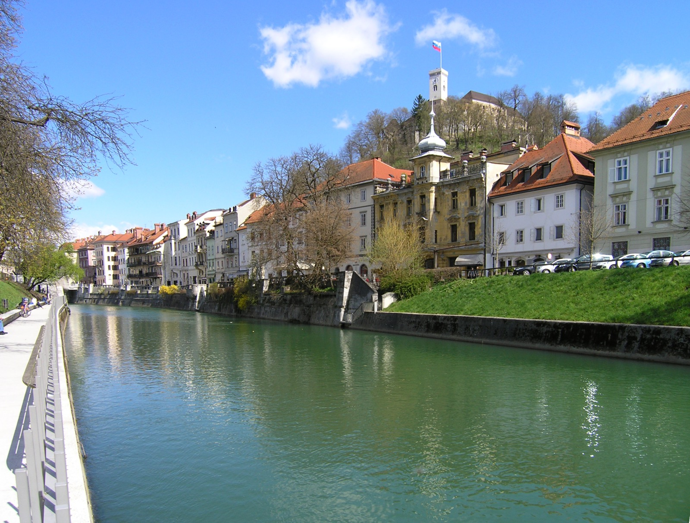
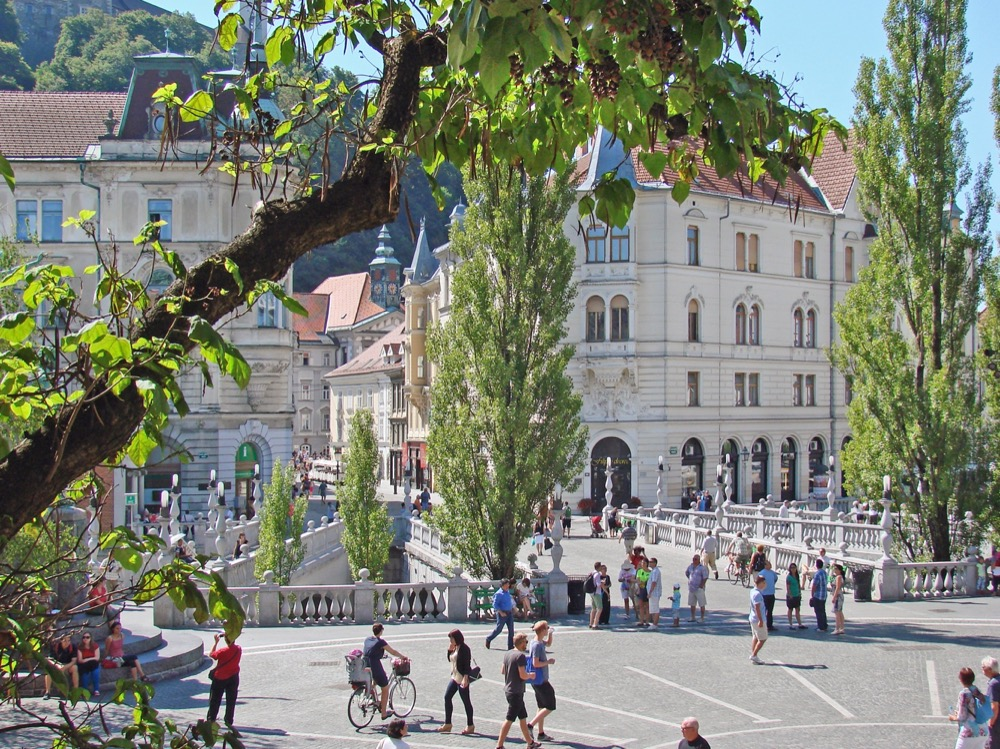
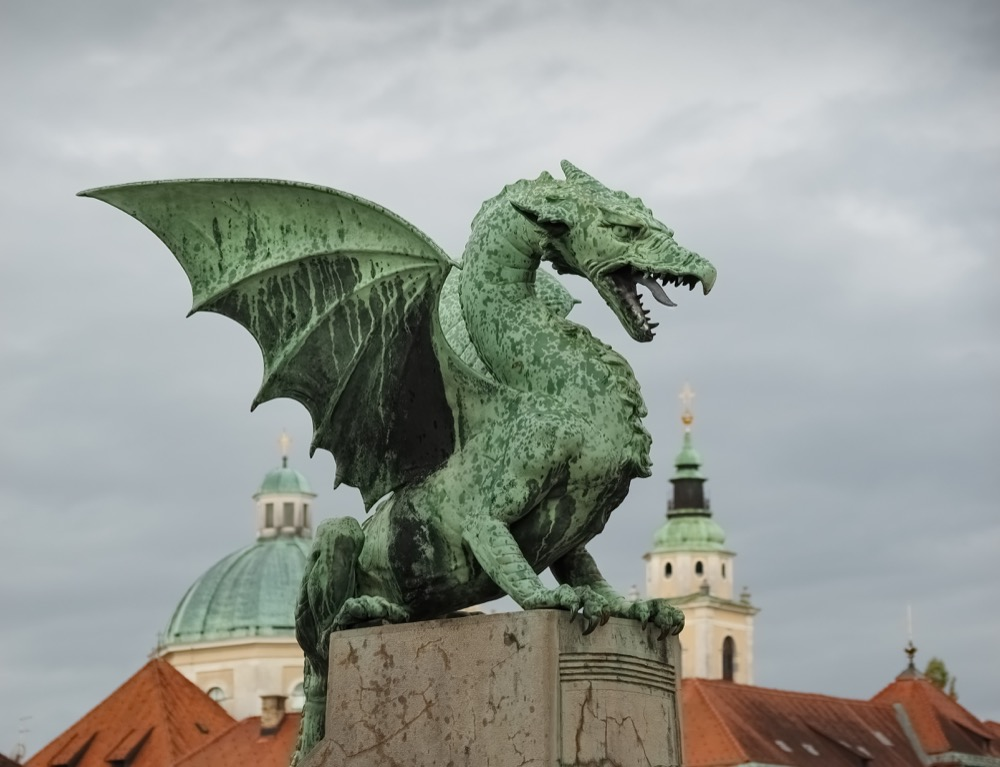

SLOVENIA · LJUBLJANA · 城市走讀誌
盧比亞納
不斷被摧毀、
重建、重新定義
的城市。
從 Emona 的羅馬石牆，到河岸邊的柱廊。
在一座可以步行閱讀的首都，遇見層層疊起的歐洲。

46°03′ N 14°30′ E
沿著盧比亞納河，閱讀一座城市
沿著盧比亞納河，閱讀一座城市
DESTROYED. REBUILT. REIMAGINED.
01 看見歷史的斷層02 用雙腳連起城市03 讀懂建築的語言
01 / THE LAYERS OF TIME
每一次斷裂，
都留下新的城市。
「被摧毀」是歷史的其中一面；
遷徙、重建與政治轉折，也不斷改寫城市的身分。
讀圖提示：這是一條城市轉變的年表；文化轉折、政權更替與物理破壞，並不是同一件事。
摧毀｜晚期羅馬
匈人入侵，城市走向衰落
匈人在 452 年的征途中侵襲 Emona。這是長期衰落的轉折，不能簡化成城市當年完全消失；這段入侵的年份為 452 年，並非 458 年。
1125
成城｜市場與街巷
城堡、河流與三個聚落
Old Square、Town Square、New Square 的城市肌理逐漸成形。城市權利與卡尼奧拉中心地位，讓商業、權力與生活聚集於此。
1813
1940s
1991
2007
世界遺產｜日常的價值
以人為本的城市設計獲得肯定
UNESCO 將一組 Plečnik 在盧比亞納的作品列入世界遺產。登錄的是特定系列組成部分，並不等於全城或他每一件作品都被列入。
02 / WALK THE CITY
把歷史，走成一條路。
從羅馬城牆出發，經過圖書館、河岸與老城，再登上城堡山。
13 個走讀停靠點4–6 小時慢遊建議步行＋上坡 可選纜車
建議順序：Mirje → 國會廣場 → 圖書館 → 河岸與老城 → 龍橋 → 詩人廣場 → Vurnik House → 城堡。時間為含停留的規劃估計，不含完整館內參觀；想逛市場可提早抵達或調整順序。
01古羅馬 × 現代保存羅馬城牆・MirjeRimski zid / Roman Wall
約西元 14 年；1930 年代整修
先摸清這座城市的第一層：今日老城旁，曾有另一座遵循羅馬格局的 Emona。Mirje 留下的城牆，讓古代城市邊界變得可見。
- 現場看什麼
- 留意石牆的材料與後來的整修。Plečnik 也參與了這段遺跡的重新呈現；眼前並非全然未變的羅馬原貌。
- 拍照角度 ／策展建議
- 沿牆斜拍，把石材的厚度與延伸感放進畫面。
- 走讀提醒
- 城牆戶外走讀與付費考古園區不同；Emona House 等園區有季節性開放，先查市博物館。
Mirje，羅馬城牆一帶
02帝國外交 × 羅馬記憶國會廣場・Emona 市民像Kongresni trg / Congress Square
1821 年會議；廣場周邊古代遺址
拿破崙之後，歐洲君主與外交官在這座城商議秩序。Congress Square 的名稱，把 1821 年的外交時刻留在日常地圖上。
- 現場看什麼
- 走進旁邊 Zvezda 公園，找 Emona 市民銅像的複製品；同一處空間疊著羅馬記憶與近代政治。
- 拍照角度 ／策展建議
- 從廣場朝城堡山方向取景，用開闊前景對照山上的城堡。
- 走讀提醒
- 銅像標示為複製品；這站可先看廣場，再沿 Vegova 街前往圖書館。
Kongresni trg 與 Zvezda Park
03Plečnik × 知識之門國家暨大學圖書館Narodna in univerzitetna knjižnica
1936–1941
這座圖書館讓知識有了莊重的入口。紅磚和不同質地的石塊交錯，讓立面看起來像一部可以逐頁閱讀的建築史。
- 現場看什麼
- 找正門的飛馬 Pegasus 頭形門把，再觀察深色石材樓梯如何通往明亮的閱讀空間。
- 拍照角度 ／策展建議
- 站在街角拍立面的磚石節奏，再近拍門把；不要阻擋出入口。
- 走讀提醒
- 這仍是使用中的圖書館。遊客可參觀範圍、團體預約與開放時間以 NUK 公告為準，閱覽室並非隨時可進。
Turjaška ulica 1
04Plečnik × 河岸生活鞋匠橋・河上的廣場Čevljarski most / Cobblers’ Bridge
05巴洛克 × 城市象徵市政廳・Robba 三河噴泉Mestna hiša / Robbov vodnjak
市政廳 1717–1719 改建；噴泉 1743–1751
威尼斯出身的 Francesco Robba，把巴洛克雕塑語彙帶進城市。三位河神通常被解讀為 Sava、Ljubljanica、Krka 三條河流。
- 現場看什麼
- 廣場噴泉為複製品，原作保存於斯洛維尼亞國家美術館。市政廳庭院另有 Robba 的 Narcissus 噴泉，入口也可尋找海克力士像。
- 拍照角度 ／策展建議
- 以河神作前景、市政廳鐘樓作背景；試著繞噴泉一圈比較三面的構圖。
- 走讀提醒
- 進入市政廳請配合開放及團體管理。原作與街頭複製品值得分開理解，勿把兩者混為一談。
Mestni trg 1 及前方廣場
06巴洛克 × 當代雕塑聖尼古拉主教座堂・青銅門Stolnica sv. Nikolaja
18 世紀初；青銅門 1996
綠色穹頂與雙塔之外，最值得慢讀的是青銅門。巴洛克教堂的入口，被 20 世紀藝術家變成歷史的浮雕頁面。
- 現場看什麼
- 正門由 Tone Demšar 製作，側門由 Mirsad Begić 製作。兩扇門把宗教與地方歷史，濃縮為人物、表情與層層肌理。
- 拍照角度 ／策展建議
- 站在門側約 45 度，利用側光讀出浮雕深度；有儀式進行時先讓出通道。
- 走讀提醒
- 入內參觀依現場時間與規範，禮拜中保持安靜；拍照限制以現場標示為準。
Dolničarjeva ulica 1
07Plečnik × 每日生活中央市場・河岸柱廊Osrednja tržnica / Central Market
08當代雕塑 × 神話身體屠夫橋・Brdar 雕塑Mesarski most / Butchers’ Bridge
2010
這座橋常被稱為愛情橋，但最有張力的風景，是愛情鎖旁不安、扭曲而富於生命力的雕塑。
- 現場看什麼
- 尋找 Jakov Brdar 的 Prometheus，以及欄杆邊小型怪誕生物。作品回應市場舊日的屠肉攤位，也讓神話走進生活。
- 拍照角度 ／策展建議
- 降低視角，以小雕像為近景，將柱廊或河水置於後方。
- 走讀提醒
- 欣賞已有的鎖與雕塑即可，請不要向河中丟擲物品。這座 2010 年的橋不是 Plečnik 親自完成的建築。
中央市場與 Petkovškovo 河岸之間
09新藝術 × 工程革新龍橋・城市守護者Zmajski most / Dragon Bridge
1900–1901
四隻龍把城市象徵化為立體形象。這也是早期鋼筋混凝土橋梁：Josef Melan 負責結構設計，Jurij Zaninović 設計裝飾。
- 現場看什麼
- 看龍翼、張口與腳爪，也看橋上的帝王紀念銘文。龍的故事屬於城市傳說，不是羅馬城市建立的考古證據。
- 拍照角度 ／策展建議
- 從人行道低角度拍龍，讓天空襯出翅膀輪廓；不要走進車道。
- 走讀提醒
- 沿北岸 Petkovškovo nabrežje 往西，可以回到三重橋與詩人廣場。
Resljeva cesta 與河道交會處
10Plečnik × 新舊共存三重橋・一座橋的三種方向Tromostovje / Triple Bridge
11文學 × 國族認同Prešeren 廣場・詩人與繆思Prešernov trg
詩人紀念碑 1905
城市中心的紀念碑，獻給寫詩的人。France Prešeren 的身旁與上方，是把文學帶入公共空間的雕塑語言。
- 現場看什麼
- 紀念碑由建築師 Maks Fabiani 與雕刻家 Ivan Zajec 合作；繆思手持月桂枝。再尋找 Wolfova 街立面上與詩人遙望的 Julija 像。
- 拍照角度 ／策展建議
- 用詩人與繆思的上下關係構圖，也可把粉紅色方濟各會教堂納入廣場全景。
- 走讀提醒
- 此處人流多，拍照請保留通行空間；接著向北走 Miklošičeva 街看彩色立面。
Prešernov trg
12民族風格 × 立面藝術Vurnik House・民族色彩立面Vurnikova hiša
1921
從老城向北繞一小段路，鮮明的紅、白、藍幾何圖案會讓人停步。這是原合作經濟銀行的建築。
- 現場看什麼
- Ivan Vurnik 設計建築；立面與廳堂的彩繪出自 Helena Vurnik。請把她的名字一起記住，裝飾並非建築師一人之作。
- 拍照角度 ／策展建議
- 從街道對側正拍整片立面，再拍窗框與幾何紋樣；注意通行與車輛。
- 走讀提醒
- 內部不開放一般觀光參觀，以外觀欣賞為主。看完可沿原路回到三重橋，再前往城堡山。
Miklošičeva cesta 8
13山丘 × 城市全景盧比亞納城堡・回望整座城市Ljubljanski grad / Ljubljana Castle
中世紀城堡脈絡，歷經改建
最後把剛才走過的地方，放回整張城市地圖。河道、紅瓦屋頂、教堂穹頂與橋，從山上成為彼此相連的故事。
- 現場看什麼
- 先辨認主教座堂與河流方向，再回想羅馬城區和中世紀老城並不完全重合。
- 拍照角度 ／策展建議
- 選擇有開放視野的觀景處，以紅瓦屋頂為前景；觀景塔另依票券與開放規定。
- 走讀提醒
- 可由老城步道登山，或前往 Krekov trg 的纜車下站。步道有坡度與階梯；體力或行動需求請優先查詢纜車及無障礙資訊。
Grajska planota 1
OLD TOWN / LJUBLJANA
虛線是停靠順序示意，不是沿街導航路線。
點編號讀故事；精確步行轉彎請使用各站「步行到這裡」。標記為景點附近位置，不保證等同出入口。
目前選擇：01 羅馬城牆・Mirje
03 / A CITY AT HUMAN SCALE
Plečnik 把整座城市，
變成日常生活的舞台。
橋不只是通行的工具，河岸也不只是城市的邊界。沿著柱廊與廣場，看看建築如何讓人願意停下來。

讓新建築與舊城市對話
三重橋中央仍是 1842 年的橋。Plečnik 的介入沒有抹掉前一個時代，而是重新安排人們如何抵達廣場、河岸與市場。
市場與圖書館，同樣是城市舞台
市場的柱廊容納買菜與停留；圖書館的門把、材質與明暗，引導人慢下腳步。這些細節可以用自己的步伐感受。
真正的作品，是空間之間的關係
UNESCO 在 2021 年肯定的是一組彼此關聯的公共空間與建築。沿河與穿城的步行路徑，讓單一建物成為整體生活的一部分。
延伸閱讀：UNESCO：以人為本的城市設計 ↗ · 三重橋 ↗ · 國家暨大學圖書館 NUK ↗

A LEGEND, NOT A DATE
龍守著橋，
傳說守著城市。
Jason 與阿爾戈英雄屠龍的故事，是盧比亞納的城市傳說。它幫助我們理解象徵，卻不能當成可考的建城紀錄。
站在龍橋旁，也別忘了看橋本身：它屬於 20 世紀初的工程與新藝術脈絡，並不是 Plečnik 設計的三重橋。
READ FURTHER
資料與影像來源
歷史與景點說明依市政府、官方旅遊局、博物館、城堡、斯洛維尼亞政府及 UNESCO 資料整理。拍照角度與走讀順序為本站策展建議。開放時間與現場安排請以前往當日公告為準。
展開官方資料來源（27 筆）
- 羅馬 Emona 與今日遺跡 ↗
- Emona 的衰落與遺產 ↗
- 市政府：中世紀盧比亞納 ↗
- 市政府：宗教改革、文藝復興與巴洛克 ↗
- 市政府：18、19 世紀城市史 ↗
- 斯洛維尼亞文化入口：國家歷史 ↗
- 1821 年盧比亞納會議 ↗
- 國家暨大學圖書館 NUK ↗
- 鞋匠橋 ↗
- Robba 三河噴泉 ↗
- 國家美術館：Robba 噴泉原作 ↗
- 市政廳與庭院雕像 ↗
- 官方旅遊手冊：主教座堂與青銅門 ↗
- 中央市場 ↗
- 屠夫橋與 Brdar 雕塑 ↗
- 龍橋的工程與裝飾 ↗
- 龍的傳說與城市象徵 ↗
- 三重橋 ↗
- Prešeren 廣場與詩人紀念像 ↗
- Vurnik House ↗
- 城堡官方：如何抵達 ↗
- UNESCO：以人為本的城市設計 ↗
- 斯洛維尼亞政府：獨立公投 ↗
- 斯洛維尼亞政府：1991 年獨立 ↗
- 市博物館：Emona 考古園區參觀資訊 ↗
- 盧比亞納大學官方 ↗
- 歐盟執委會：斯洛維尼亞與歐元 ↗
影像授權
河岸與城堡：Petar Milošević · Wikimedia Commons 原始頁 · CC BY-SA 4.0。
龍橋雕像：Petar Milošević · Wikimedia Commons 原始頁 · CC BY-SA 4.0。
三重橋：Jean-Pierre Dalbéra · Wikimedia Commons 原始頁 · CC BY 2.0。
影像已縮圖，依版面可能裁切；原始影像及其衍生展示保留上述授權。地圖 © OpenStreetMap contributors；Leaflet © Vladimir Agafonkin / BSD-2-Clause。